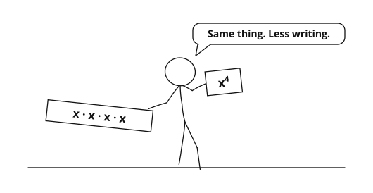

1. 23 = {{a}}8{{/a}}
2. 23 · 22 = {{a}}32{{/a}}
3. (23)2 = {{a}}64{{/a}}
4. {{f 25/22}} = {{a}}8{{/a}}

The base tells {{a}}what number is being multiplied{{/a}}.
The exponent tells {{a}}how many times to use it as a factor{{/a}}.
({{a}}x·x·x{{/a}}) · ({{a}}x·x·x·x·x{{/a}}) = x{{a}}8{{/a}}
Rule: am · an = {{a}}am+n{{/a}} — multiply like bases, {{a}}add{{/a}} the exponents.
Try it: r4 · r3 = {{a}}r7{{/a}} x9 · x3 = {{a}}x12{{/a}}
Rule: {{f am/an}} = {{a}}am−n{{/a}} — divide like bases, {{a}}subtract{{/a}} the exponents.
Try it: {{f y8/y5}} = {{a}}y3{{/a}} {{f p9/p4}} = {{a}}p5{{/a}}
Rule: (am)n = {{a}}amn{{/a}} — {{a}}multiply{{/a}} the exponents.
Try it: (m2)5 = {{a}}m10{{/a}} (x3)2 = {{a}}x6{{/a}}
Rule: (ab)n = {{a}}anbn{{/a}} — the exponent goes to {{a}}every{{/a}} factor.
Try it: (2x)4 = {{a}}16x4{{/a}} (3y)3 = {{a}}27y3{{/a}}
Rule: ({{f a/b}})n = {{a}}{{f an/bn}}{{/a}}
Try it: ({{f x/3}})2 = {{a}}{{f x2/9}}{{/a}} ({{f 2m/5}})3 = {{a}}{{f 8m3/125}}{{/a}}
Rule: a0 = {{a}}1{{/a}} (as long as a {{a}}≠{{/a}} 0)
(5y)0 = {{a}}1{{/a}} (3a4)0 = {{a}}1{{/a}} In this course, 00 = {{a}}undefined{{/a}}
By canceling: {{a}}{{f 1/a2}}{{/a}} By subtracting exponents: {{a}}a−2{{/a}}
Rule: a−n = {{a}}{{f 1/an}}{{/a}} and {{f 1/a−n}} = {{a}}an{{/a}}
A negative exponent does not make a number negative — it moves the factor {{a}}to the other side of the fraction bar{{/a}}.
= x−6y3 = {{f y3/x6}}
{{/a}}= {{f 1/2}}x−7y4 = {{f y4/2x7}}
{{/a}}82/3 = {{a}}4{{/a}}
163/4 = {{a}}8{{/a}}
Write 5√(x2) with a rational exponent: {{a}}x2/5{{/a}}
Write {{f 1/3√(y4)}} with a rational exponent: {{a}}y−4/3{{/a}}
{{f 4x6/x5}} = 4x
{{/a}}3−2a−4b6 = {{f b6/9a4}}
{{/a}}{{f x−6y12/x3y−2}} = x−9y14 = {{f y14/x9}}
{{/a}}| Rule | Algebraic form | Example |
|---|---|---|
| Product | {{a}}am·an = am+n{{/a}} | {{a}}x2·x3 = x5{{/a}} |
| Quotient | {{a}}{{f am/an}} = am−n{{/a}} | {{a}}{{f x5/x2}} = x3{{/a}} |
| Power of a power | {{a}}(am)n = amn{{/a}} | {{a}}(x2)3 = x6{{/a}} |
| Power of a product | {{a}}(ab)n = anbn{{/a}} | {{a}}(2x)3 = 8x3{{/a}} |
| Power of a quotient | {{a}}({{f a/b}})n = {{f an/bn}}{{/a}} | {{a}}({{f x/2}})3 = {{f x3/8}}{{/a}} |
| Zero exponent | {{a}}a0 = 1 (a ≠ 0){{/a}} | {{a}}(7x)0 = 1{{/a}} |
| Negative exponent | {{a}}a−n = {{f 1/an}}{{/a}} | {{a}}x−3 = {{f 1/x3}}{{/a}} |
| Fractional exponent | {{a}}am/n = n√(am){{/a}} | {{a}}82/3 = 4{{/a}} |
1. x2 · x5{{a}} = x7{{/a}}
2. {{f p7/p2}}{{a}} = p5{{/a}}
3. (r3)4{{a}} = r12{{/a}}
4. (5m)2{{a}} = 25m2{{/a}}
5. ({{f n/3}})3{{a}} = {{f n3/27}}{{/a}}
6. a4b2 · a3b5{{a}} = a7b7{{/a}}
7. {{f (2t2)3/t4}}{{a}} = 8t2{{/a}}
8. (3c2d)2{{a}} = 9c4d2{{/a}}
9. {{f (4x3y2)2/8x4}}{{a}} = 2x2y4{{/a}}
10. (k−2m3)2{{a}} = {{f m6/k4}}{{/a}}
11. {{f (2x−3y4)2/(x2y−1)3}}{{a}} = {{f 4y11/x12}}{{/a}}
12. (3a−2b4)−3{{a}} = {{f a6/27b12}}{{/a}}
13. {{f (6p2q−1)3/(2p−3q4)2}}{{a}} = {{f 54p12/q11}}{{/a}}
14. {{f (x2y3)−2/(x−4y)3}}{{a}} = {{f x8/y9}}{{/a}}
15. {{f (4m−1n2)0/(m3n−2)−1}}{{a}} = {{f m3/n2}}{{/a}}
16. {{f 12r−2s3/4r5s−4}}{{a}} = {{f 3s7/r7}}{{/a}}
17. {{f (10x−2y)2/(2x3y−3)3}}{{a}} = {{f 25y11/2x13}}{{/a}}
18. (2a−3b2c−1)−2{{a}} = {{f a6c2/4b4}}{{/a}}
19. {{f (x−2y5)2/(x3y−4)−1}}{{a}} = {{f y6/x}}{{/a}}
20. (5t0u−3)3{{a}} = {{f 125/u9}}{{/a}}
21. 251/2{{a}} = 5{{/a}}
22. 272/3{{a}} = 9{{/a}}
23. x3/2 · x1/2{{a}} = x2{{/a}}
24. {{f y5/4/y1/2}}{{a}} = y3/4{{/a}}
25. (z2/3)3/2{{a}} = z{{/a}}
26. {{f (9a1/2b−2/3)3/(3a−2b1/3)2}}{{a}} = {{f 81a11/2/b8/3}}{{/a}}
27. {{f (4x2/5y−1)−2/(2x−3y3/5)3}}{{a}} = {{f x41/5y1/5/128}}{{/a}}
28. {{f (3p−1/2q3/4)2/(9p2/3q−1/4)3}}{{a}} = {{f q9/4/81p3}}{{/a}}